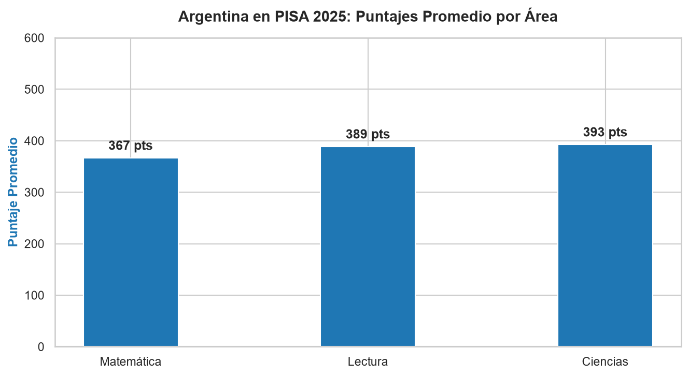
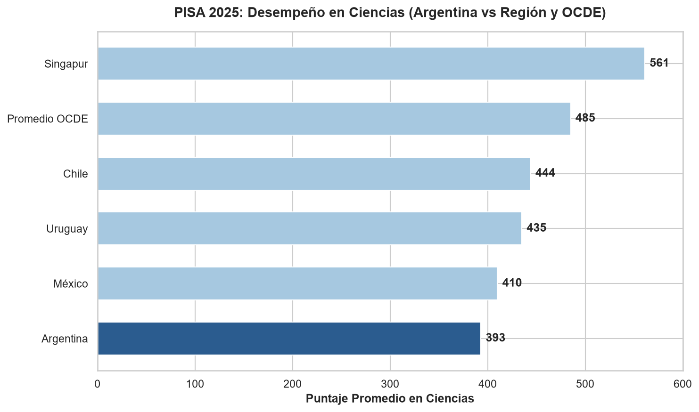

Matemática
367
Puesto global: 75° de 91
OCDE · PISA 2025
Matemática
367
Puesto global: 75° de 91
Lectura
389
Puesto global: 62° de 91
Ciencias
393
Puesto global: 71° de 91

Puntajes promedio de Argentina por área en PISA 2025.

Comparativa internacional en Ciencias: Argentina frente al promedio OCDE y países regionales.
En PISA 2025, Argentina mostró resultados por debajo del promedio de la OCDE en las tres áreas evaluadas, con mayores desafíos en Matemática y en la proporción de estudiantes ubicados bajo el nivel mínimo.
OECD: PISA - Programme for International Student Assessment
OECD. PISA 2025 Results (Volume I): Future‑Ready Students. OECD Publishing, 2026. https://doi.org/10.1787/73451bc5-en